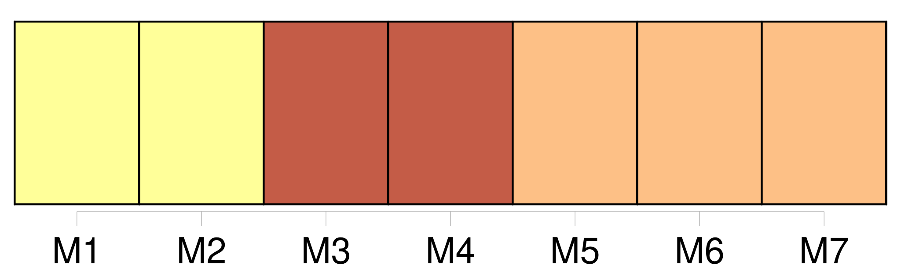

Longueur nb maillons : 255 mentions |
 |
[L'un] venait de la Bastille, l'autre du Jardin des Plantes. [Le plus grand] , vêtu de toile, marchait le chapeau en arrière, le gilet déboutonné et [sa] cravate à la main. [2 phrases]
Pour s'essuyer le front, ils retirèrent leurs coiffures, que chacun posa près de soi ; et le petit homme aperçut, écrit dans le chapeau de [son voisin] : Bouvard ; pendant que [celui -ci] distinguait aisément dans la casquette du particulier en redingote le mot : Pécuchet.
— Tiens, dit [-il] , nous avons eu la même idée, celle d'inscrire notre nom dans nos couvre-chefs. [1 phrases]
— C'est comme [moi] , [je] suis employé. [1 phrases]
L'aspect aimable de [Bouvard] charma de suite Pécuchet. [Ses] yeux bleuâtres, toujours entre-clos, souriaient dans [son] visage coloré.
Un pantalon à grand-pont, qui godait par le bas sur des souliers de castor, moulait [son] ventre, faisait bouffer [sa] chemise à la ceinture ; et [ses] cheveux blonds, frisés d'eux -mêmes en boucles légères, [lui] donnaient quelque chose d'enfantin.
[Il] poussait du bout des lèvres une espèce de sifflement continu.
L'air sérieux de Pécuchet frappa [Bouvard] [4 phrases] Mais la banlieue, selon [Bouvard] , était assommante par le tapage des guinguettes. [1 phrases]
Il commençait néanmoins à se sentir fatigué de la capitale, [Bouvard] aussi. [4 phrases] [Bouvard] l'engagea à mettre bas sa redingote. [2 phrases]
Leurs opinions étaient les mêmes, bien que [Bouvard] fût peut-être plus libéral. [4 phrases]
— [Moi] , [je] suis veuf, dit [Bouvard] , et sans enfants! — C'est peut-être un bonheur pour [vous] ?? [3 phrases] Quand elle fut plus loin, [Bouvard] se permit une réflexion obscène.
Pécuchet devint très rouge, et sans doute pour s'éviter de répondre, [lui] désigna du regard un prêtre qui s'avançait. L'ecclésiastique descendit avec lenteur l'avenue des maigres ormeaux jalonnant le trottoir, et [Bouvard] , dès qu' [il] n'aperçut plus le tricorne, se déclara soulagé, car [il] exécrait les jésuites. [9 phrases]
Ils se quittaient pourtant, et leurs mains étaient jointes, quand [Bouvard] dit tout à coup : [2 phrases]
reprit Pécuchet, mais je n'osais pas [vous] le proposer! [1 phrases]
[Bouvard] commanda le menu. [5 phrases] Hélas, le gagne-pain l'absorbait ; et ils levèrent les bras d'étonnement, ils faillirent s'embrasser par-dessus la table en découvrant qu'ils étaient tous les deux copistes, [Bouvard] dans une maison de commerce, Pécuchet au ministère de la marine ; ce qui ne l'empêchait pas de consacrer, chaque soir, quelques moments à l'étude. [1 phrases] [Bouvard] l'emportait par d'autres côtés. [Sa] chaîne de montre en cheveux et la manière dont [il] battait la rémolade décelaient le roquentin plein d'expérience, et [il] mangeait, le coin de la serviette dans l'aisselle, en débitant des choses qui faisaient rire Pécuchet. [1 phrases]
Celui de [Bouvard] était contenu, sonore, découvrait [ses] dents, [lui] secouait les épaules, et les consommateurs à la porte s'en retournaient. [2 phrases] [Bouvard] était plus indulgent à leur endroit.
[Il] aimait tous les écrivains en général et [avait eu] dans [sa] jeunesse des dispositions pour être acteur. [Il] voulut faire des tours d'équilibre avec une queue de billard et deux boules d'ivoire, comme en exécutait Barberou, un de [ses] amis. [9 phrases]
[Bouvard] , à cause de l'odeur sans doute, demanda la permission d'ouvrir la fenêtre. [3 phrases]
[Bouvard] lui dit : [2 phrases]
— Faites [-moi] la conduite, reprit [Bouvard] , l'air extérieur vous rafraîchira.
Enfin Pécuchet repassa ses bottes en grommelant :
Et malgré la distance, il [l'] accompagna jusque chez [lui] , au coin de la rue de Béthune, en face le pont de la Tournelle. La chambre de [Bouvard] , bien cirée, avec des rideaux de percale et des meubles en acajou, jouissait d'un balcon ayant vue sur la rivière. [1 phrases] — [Mon] oncle!!
dit [Bouvard]
Et le flambeau qu' [il] tenait éclaira un monsieur. [4 phrases]
Pécuchet ne put s'empêcher de dire : — C'est [mon] parrain, répliqua [Bouvard] négligemment, ajoutant qu' [il] s'appelait de ses noms de baptême François-Denys-Bartholomée. [6 phrases]
cria [Bouvard] dans l'escalier. [1 phrases]
Le lendemain, dans la cour de Mm. Descambos frères : tissus d'Alsace, rue Hautefeuille, 92, une voix appela :
[Monsieur Bouvard] !
[Celui -ci] passa la tête par les carreaux et [reconnut] Pécuchet qui articula plus fort : [5 phrases]
Le matin, il s'était rappelé son action, heureusement sans conséquence, et il venait en instruire [Bouvard] , [qui] , par là, fut placé dans son estime à une prodigieuse hauteur. [6 phrases] Les plus vieux souvenirs de [Bouvard] [le] reportaient sur les bords de la Loire, dans une cour de ferme. Un homme, qui était [son] oncle, [l'] avait emmené à Paris pour [lui] apprendre le commerce. À [sa] majorité, on [lui] versa quelques mille francs. Alors [il] avait pris femme et ouvert une boutique de confiseur. Six mois plus tard, [son] épouse disparaissait en emportant la caisse. Les amis, la bonne chère, et surtout la paresse, avaient promptement achevé [sa] ruine. Mais [il] eut l'inspiration d'utiliser [sa] belle main ; et depuis douze ans, [il] se tenait dans la même place, chez Mm. Descambos frères : tissus, rue Hautefeuille, 92. Quant à [son] oncle, qui autrefois [lui] avait expédié comme souvenir le fameux portrait, [Bouvard] ignorait même sa résidence et n'en attendait plus rien.
Quinze cents livres de revenu et [ses] gages de copiste [lui] permettaient d'aller, tous les soirs, faire un somme dans un estaminet. [8 phrases] [Bouvard] marchait à grandes enjambées, tandis que Pécuchet, multipliant les pas, avec sa redingote qui lui battait les talons, semblait glisser sur des roulettes. [1 phrases] [Bouvard] fumait la pipe, [aimait] le fromage, [prenait] régulièrement [sa] demi-tasse. [1 phrases]
[L'un] était confiant, étourdi, généreux ; l'autre discret, méditatif, économe. Pour lui être agréable, [Bouvard] voulut faire à Pécuchet la connaissance de Barberou. [1 phrases] Pécuchet le trouva déplaisant et il conduisit [Bouvard] chez Dumouchel. [1 phrases]
Il ennuya [Bouvard] [33 phrases]
Pécuchet contracta la brusquerie de [Bouvard] , [Bouvard] prit quelque chose de la morosité de Pécuchet. [7 phrases]
Un après-midi ( c'était le 20 janvier 1839 ), [Bouvard] étant à [son] comptoir reçut une lettre, apportée par le facteur.
[Ses] bras se levèrent, [sa] tête peu à peu se renversait et [il] tomba évanoui sur le carreau. Les commis se précipitèrent, on [lui] ôta [sa] cravate. [1 phrases]
[Il] rouvrit les yeux ; puis aux questions qu'on [lui] faisait : [2 phrases] un peu d'air [me] soulagera. [1 phrases] laissez [-moi] !! [1 phrases]
Et malgré [sa] corpulence, [il] courut tout d'une haleine jusqu'au ministère de la Marine, se passant la main sur le front, croyant devenir fou, tâchant de se calmer.
[Il] fit demander Pécuchet. [1 phrases] — [Mon] oncle est mort!!
[j'] hérite! [1 phrases]
[Bouvard] montre les lignes suivantes : Étude De Me Tardivel
« [Monsieur] ,
Ce testament contient en [votre] faveur une disposition très importante. « Agréez, [Monsieur] , l'assurance de mes respects. [6 phrases]
reprit [Bouvard] d'une voix étranglée, pareille à un râle de moribond. [3 phrases] [Bouvard] était très rouge.
[Il] donna à Pécuchet des coups de poing dans le dos, et pendant cinq minutes, [déraisonna] complètement. [7 phrases]
[Bouvard] écrivit au notaire pour en avoir.
Le notaire envoya la copie du testament, lequel se terminait ainsi :
» [1 phrases] Ses deux fils légitimes ayant tourné contrairement à ses vues, un remords l'avait pris sur l'abandon où il laissait depuis tant d'années [son autre enfant] Il [l'] eût même fait venir chez lui, sans l'influence de sa cuisinière. Elle le quitta, grâce aux manœuvres de la famille, et, dans son isolement, près de mourir, il voulut réparer ses torts en léguant [au fruit de ses premières amours] tout ce qu'il pouvait de sa fortune. Elle s'élevait à la moitié d'un million, ce qui faisait pour [le copiste] deux cent cinquante mille francs. [1 phrases] [Bouvard] tomba dans une sorte d'hébétude.
[Il] répétait à voix basse, en souriant du sourire paisible des ivrognes : [3 phrases] ! [Bouvard] en eut une maladie bilieuse.
À peine convalescent, [il] s'embarqua pour Savigny, d'où [il] revint, sans conclusion d'aucune sorte et déplorant [ses] frais de voyage. [1 phrases]
Enfin, au bout de six mois, le sieur Alexandre s'apaisant, [Bouvard] entra en possession de l'héritage.
[Son] premier cri avait été : Et ce mot qui liait [son] ami à [son] bonheur, Pécuchet l'avait trouvé tout simple. [1 phrases] Mais comme il ne pouvait point vivre aux crochets de [Bouvard] , il ne partirait pas avant sa retraite. [21 phrases]
[Bouvard] tranchait la question : [3 phrases]
[Bouvard] emporterait [ses] meubles, Pécuchet sa grande table noire ; on tirerait parmi des rideaux et avec un peu de batterie de cuisine ce serait bien suffisant. [2 phrases] [Bouvard] , [qui] écrivait étalé sur [son] pupitre et les coudes en dehors pour mieux arrondir [sa] bâtarde, poussait [son] espèce de sifflement tout en clignant d'un air malin [ses] lourdes paupières. [11 phrases]
[Bouvard] n'en donnait que cent vingt mille. Pécuchet combattit [son] entêtement, [le] pria de céder, enfin déclara qu'il complèterait le surplus. [3 phrases] [Bouvard] n'était plus copiste. D'abord, [il] avait continué [ses] fonctions par défiance de l'avenir, mais s'en était démis une fois certain de l'héritage.
Cependant [il] retournait volontiers chez les Mm. Descambos, et la veille de [son] départ [il] offrit un punch à tout le comptoir. [3 phrases] Barberou se montra plus sensible en recevant l'adieu de [Bouvard]
Il abandonna exprès une partie de dominos, promit d'aller [le] voir là-bas, commanda deux anisettes et [l'] embrassa. [Bouvard] , rentré chez [lui] , aspira sur [son] balcon une large bouffée d'air en se disant : « Enfin. [1 phrases]
[Il] se rappela des jours heureux passés dans cette grande ville, des pique-niques au restaurant, des soirs au théâtre, les commérages de [sa] portière, toutes [ses] habitudes ; et [il] sentit une défaillance de cœur, une tristesse qu' [il] n'osait pas s'avouer. [4 phrases]
Les instruments de jardin, les couchettes, les matelas, les tables, les chaises, un caléfacteur, la baignoire et trois fûts de Bourgogne iraient par la Seine, jusqu'au Havre, et de là seraient expédiés sur Caen, où [Bouvard] [qui] les attendrait les ferait parvenir à Chavignolles. Mais le portrait de [son] père, les fauteuils, la cave à liqueurs, les bouquins, la pendule, tous les objets précieux furent mis dans une voiture de déménagement qui s'acheminerait par Nonancourt, Verneuil et Falaise. [15 phrases] [Bouvard] n'avait quitté Paris que le surlendemain, pour dîner encore une fois avec Barberou.
[Il] arriva dans la cour des Messageries à la dernière minute, puis [se réveilla] devant la cathédrale de Rouen ; [il] s'était trompé de diligence. Le soir, toutes les places pour Caen étaient retenues ; ne sachant que faire, [il] alla au théâtre des Arts, et [il] souriait à [ses] voisins, disant qu' [il] était retiré du négoce et nouvellement acquéreur d'un domaine aux alentours. Quand [il] débarqua le vendredi à Caen, [ses] ballots n'y étaient pas.
[Il] les reçut le dimanche et les [expédia] sur une charrette, ayant prévenu le fermier qu' [il] les suivrait de quelques heures. [12 phrases]
[Bouvard] était dedans. [20 phrases] [Bouvard] ne s'y refusa pas. [14 phrases]
Déshabillés et dans leur lit, ils bavardèrent quelque temps, puis s'endormirent, [Bouvard] sur le dos, la bouche ouverte, tête nue ; Pécuchet sur le flanc droit, les genoux au ventre, affublé d'un bonnet de coton, et tous les deux ronflaient sous le clair de la lune, qui entrait par les fenêtres. [1 phrases] [Bouvard] fuma une pipe et Pécuchet huma une prise, qu'ils déclarèrent la meilleure de leur existence. [23 phrases]
Elles mangeaient trop de fumier, les charrois étaient dispendieux ; impossible d'extraire les cailloux, la mauvaise herbe empoisonnait les prairies ; et ce dénigrement de [sa] terre atténua le plaisir que [Bouvard] sentait à marcher dessus. [9 phrases] [Bouvard] , en passant près de la charmille, découvrit sous les branches une dame en plâtre. [8 phrases] Pour se garantir du soleil, [Bouvard] portait sur la tête un mouchoir noué en turban, Pécuchet sa casquette ; et il avait un grand tablier avec une poche par devant, dans laquelle ballotaient un sécateur, son foulard et sa tabatière. [4 phrases]
[Bouvard] planta une pivoine au milieu du gazon et des pommes d'amour qui devaient retomber comme des lustres, sous l'arceau de la tonnelle. [3 phrases]
Enfin, après beaucoup de recherches, malgré les instances de [Bouvard] , et abjurant toute pudeur, il prit le parti « d'aller lui -même au crottin! ». [1 phrases] Quand elle l'eut complimenté, elle s'informa de [son ami] [2 phrases]
Impolitesse que blâma [Bouvard] [30 phrases] [Bouvard] fit l'éloge de sa luzerne. [3 phrases]
[Bouvard] et Pécuchet reprirent ensemble : [18 phrases]
Le régisseur aida [Bouvard] et Pécuchet à franchir un échalier, et ils traversèrent deux masures, où des vaches ruminaient sous les pommiers. [25 phrases]
Pour se rendre aux foires plus commodément, ils achetèrent une carriole que [Bouvard] conduisait. [6 phrases]
Enfin, [Bouvard] déclara [son] intention de ne pas renouveler le bail. [1 phrases] [Bouvard] avait pensé que 20 000 francs, c'est-à-dire plus de quatre fois le prix du fermage, suffiraient au début.
[Son] notaire de Paris les envoya. [4 phrases]
[C'] était [Bouvard] [qui] fouettait le cheval et Pécuchet, monté dans l'auge, retournait le marc avec une pelle. [8 phrases]
Quelquefois [Bouvard] marchait derrière, faisant des haltes à mi-côte pour s'éponger le front. [13 phrases] [Bouvard] s'occuperait de la ferme. [35 phrases] Au premier, [Bouvard] fit la grimace. [10 phrases] [Bouvard] , comme lui, rencontrait des obstacles. [3 phrases] Les jachères, selon [Bouvard] , étaient un préjugé gothique. [10 phrases] Après force méditations, [Bouvard] reconnut qu' [il] s'était trompé.
[Son] domaine exigeait la grande culture, le système intensif, et [il] aventura ce qui [lui] restait de capitaux disponibles ; trente mille francs. Excité par Pécuchet, [il] eut le délire de l'engrais. Dans la fosse aux composts furent entassés des branchages, du sang, des boyaux, des plumes, tout ce qu' [il] pouvait découvrir. [Il] employa la liqueur belge, le lizier suisse, la lessive, des harengs saurs, du varech, des chiffons, [fit] venir du guano, tâcha d'en fabriquer, et, poussant jusqu'au bout [ses] principes, ne [tolérait] pas qu'on perdît l'urine ; [il] supprima les lieux d'aisances. On apportait dans [sa] cour des cadavres d'animaux, dont [il] fumait [ses] terres. [1 phrases] [Bouvard] souriait au milieu de cette infection. [1 phrases]
À ceux qui avaient l'air dégoûté, [il] disait : [1 phrases] Et [il] regrettait de n'avoir pas encore plus de fumiers. [3 phrases] [Il] crut bon de renouveler [son] matériel.
[Il] acheta un scarificateur Guillaume, un extirpateur Valcourt, un semoir anglais et la grande araire de Mathieu de Dombasle, mais le charretier la dénigra. [3 phrases]
[Il] essayait de montrer, [se trompait] , et les paysans ricanaient. Jamais [il] ne put les astreindre au commandement de la cloche. Sans cesse [il] criait derrière eux, [courait] d'un endroit à l'autre, [notait] [ses] observations sur un calepin, [donnait] des rendez -vous, n'y [pensait] plus, et [sa] tête bouillonnait d'idées industrielles. [Il] se promettait de cultiver le pavot, en vue de l'opium, et surtout l'astragale, qu' [il] vendrait sous le nom de « café des familles ». |

|
Il est possible de télécharger la ressource sur la page Ortolang |
Si vous avez des questions ou vous voyez des erreurs, merci d'envoyer un mail à silvia.federzoni89@gmail.com |